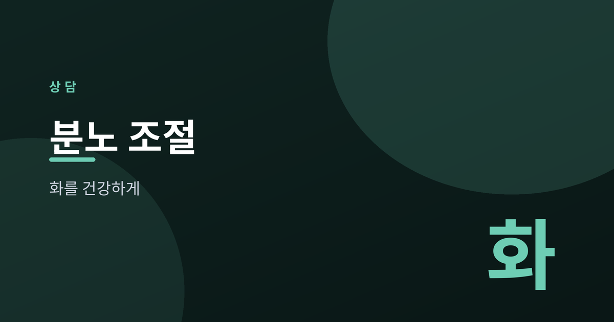
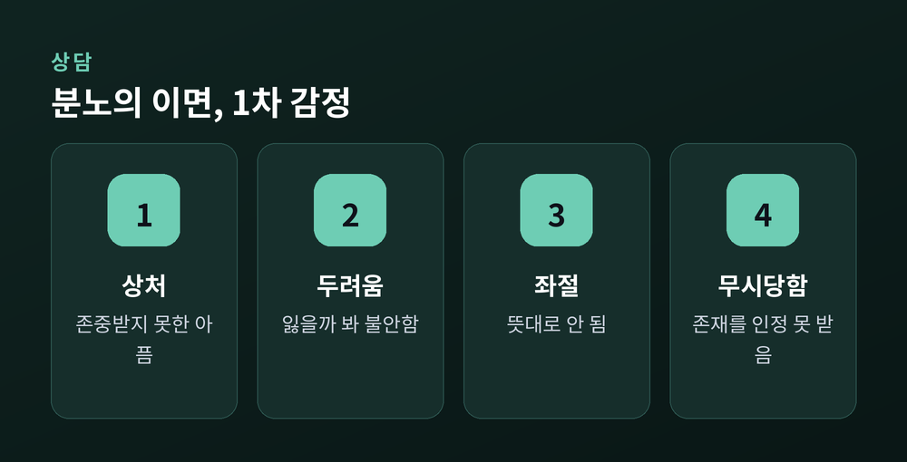
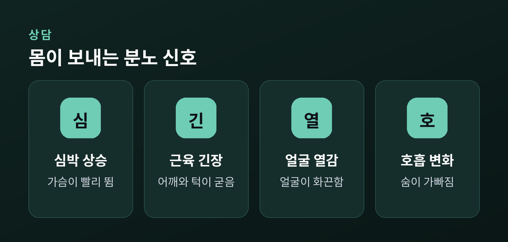
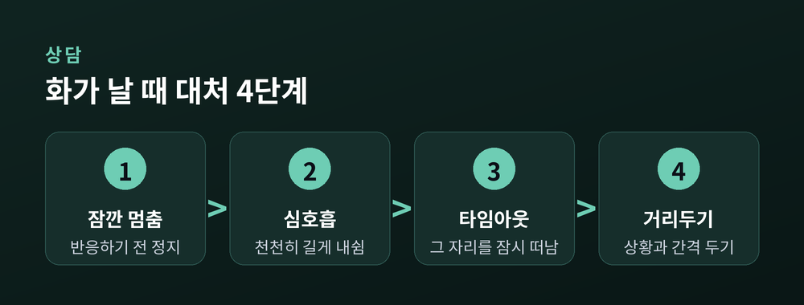
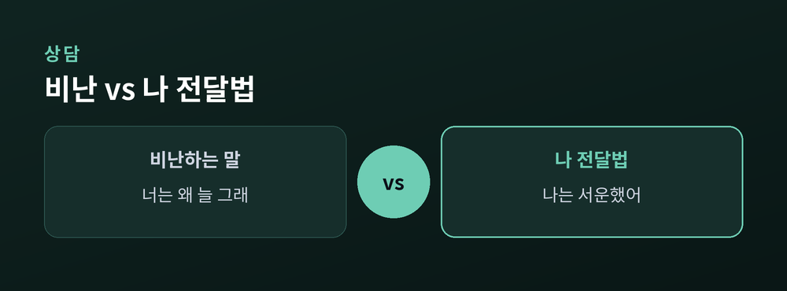

화라는 감정을 건강하게 다루는 법

화는 누구에게나 찾아오는 감정입니다.
문제는 화 자체가 아니라, 그 화를 어떻게 다루느냐에 있습니다.
이 글에서는 화를 억누르지 않으면서도 건강하게 조절하는 방법을 함께 살펴봅니다.
분노는 없애야 할 결함이 아니라, 정보를 담은 신호입니다.
"지금 내게 중요한 무언가가 침해받았다"고 알려주는 감정이지요.
그래서 화는 억압의 대상이 아니라 이해와 조절의 대상입니다.
화를 참기만 하면 사라지는 것이 아니라, 다른 곳에서 더 크게 터집니다.
억누르기보다 알아차리는 쪽이 오히려 안전합니다.
화는 대개 혼자 오지 않습니다.
그 아래에는 먼저 생겨난 1차 감정이 숨어 있는 경우가 많습니다.

겉으로 드러난 분노만 보면 진짜 원인을 놓치기 쉽습니다.
"나는 지금 무엇 때문에 아팠나"를 물어보면 이면이 보입니다.
화가 폭발하기 전에 몸은 미리 알려줍니다.
이 신호를 일찍 알아차릴수록 대처할 시간이 생깁니다.

신호를 알아차리는 것만으로도 반응과 나 사이에 틈이 생깁니다.
즉각적인 대처의 목표는 화를 없애는 것이 아닙니다.
잠시 거리를 두어, 후회할 행동을 막는 것입니다.

여기서 한 가지는 분명히 하고 싶습니다.
자신을 때리거나 아프게 하는 방식은 대처가 아닙니다.
스스로에게 고통을 주지 않는, 안전한 방법을 선택해야 합니다.
화를 표현하는 것과 상대를 공격하는 것은 다릅니다.
"너는"으로 시작하면 비난이 되고, "나는"으로 시작하면 내 감정이 전달됩니다.

같은 상황에서도 말의 주어를 바꾸면 대화의 온도가 달라집니다.
순간의 대처만큼 평소의 상태가 중요합니다.
아래 습관은 화에 대한 내성을 조금씩 높여 줍니다.
| 습관 | 이유 |
|---|---|
| 충분한 수면 | 피곤하면 화를 참기 어렵습니다 |
| 규칙적인 운동 | 쌓인 긴장을 풀어 줍니다 |
| 트리거 기록 | 반복되는 방아쇠가 보입니다 |
작은 습관이 쌓이면, 같은 상황에서도 덜 흔들리게 됩니다.
화가 반복해서 관계나 일상을 해치고 있다면, 혹은 스스로 조절이 어렵게 느껴진다면, 그것은 의지가 약해서가 아닙니다.
그럴 때는 심리상담사 등 전문가의 도움을 받는 것이 현명한 선택입니다.
전문가와 함께라면 나만의 패턴을 더 정확히 이해하고, 나에게 맞는 방법을 찾을 수 있습니다.
화를 잘 다루는 사람은 화가 없는 사람이 아니라, 화와 잘 지내는 법을 아는 사람입니다.